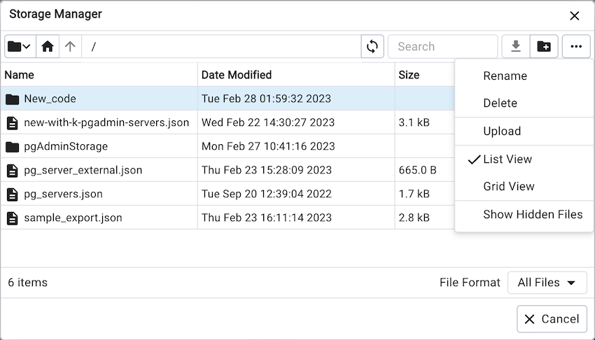
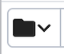
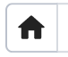
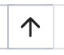
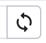
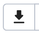
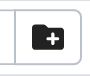
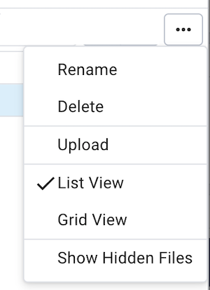
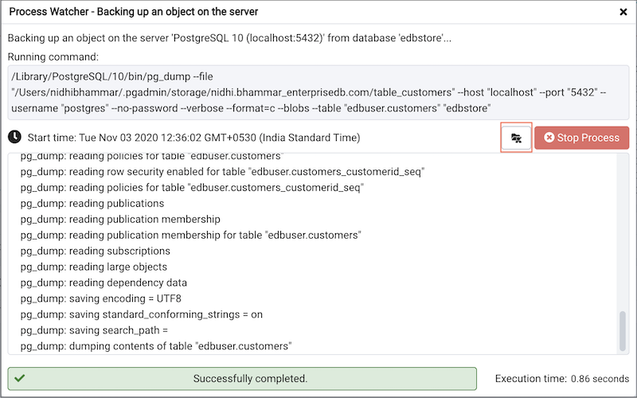

Storage Manager¶
Storage Manager is a feature that helps you manage your systems storage device. You can use Storage Manager to:
Download, upload, or manage operating system files. To use this feature, pgAdmin must be running in Server Mode on your client machine.
The shared storage option allows users to access the shared storages that are shared by admin users.
Download backup or export files (custom, tar and plain text format) on a client machine.
Download export dump files of tables.
You can access Storage Manager from the Tools Menu.
Use icons on the top of the Storage Manager window to manage storage:
Use the Folder icon  to access shared storage. In order to enable shared storage,
admins need to add the SHARED_STORAGE variable to the config file. Users can access the shared storage
with this and share files with one another.
Use the Home icon  to return to the home directory.
Use the Up Arrow icon  to return to the previous directory.
Use the Refresh icon  to display the most-recent files available.
Select the Download icon  to download the selected file.
Use the New Folder icon  to add a new folder.
Use the Format drop down list to select the format of the files to be displayed; choose from sql, csv, or All Files.
Other Options¶
Menu |
Behavior |
|---|---|
Rename |
Click the Rename option to rename a file/folder. |
Delete |
Click the Delete option to rename a file/folder. |
Upload |
Click the Upload option to upload multiple files to the current folder. |
List View |
Click the List View option to to display all the files and folders in a list view. |
Grid View |
Click the Grid View option to to display all the files and folders in a grid view. |
Show Hidden Files |
Click the Show Hidden Files option to view hidden files and folders. |
You can also download backup files through Storage Manager at the successful completion of the backups taken through Backup Dialog, Backup Global Dialog, or Backup Server Dialog.
At the successful completion of a backup, click on the icon to open the current backup file in Storage Manager on the process watcher window.
